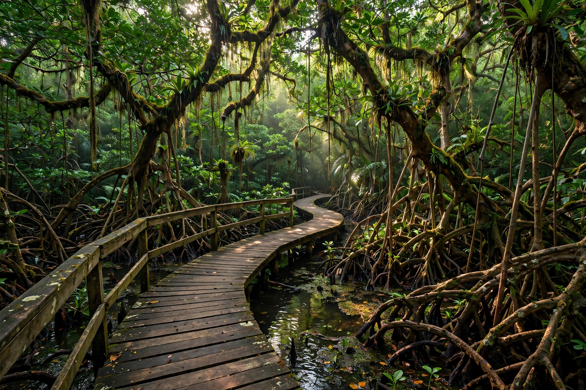

Enigma de las Rocas
Un sendero interpretativo que recorre 3 cenotes del mayor sistema de cuevas inundadas de Cuba: 10,000 hectáreas terrestres y 400 marinas, originado por una falla tectónica de 1.5 millones de años que se extiende 70 km por la costa sur.
El cenote mayor alcanza 86 metros de profundidad. En una piscina natural de 25 metros conviven dos cocodrilos, un manjuarí —pez fósil viviente de la era mesozoica, que en Cuba solo existe aquí— y varias jicoteas.
Es espeleobuceo de clase mundial en un entorno casi virgen, muy lejos de las multitudes.
- Acceso: Con guía especializado, reserva anticipada
- Nivel: Intermedio; no apto para principiantes sin guía
- Qué ver: Cenotes, manjuarí, cocodrilos, formaciones cársicas
- Secreto: Pregunta por el buceo en el cenote mayor